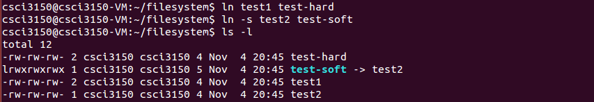

Hard link and symbolic link
- Hard Link
You can regard hard link as a mirror copy of the original file. Hard link shares the same inode (file metadata). Any changes made to the original or hard linked file will reflect the other. Even if you delete any one of the files, nothing will happen to the other. Hard link can't cross file systems.
Use ln sourceFile hardLinkName to create a hard link hardLinkName of sourcefile
- Symbolic Link
Symbolic link is also called soft link. It is a special file containing a path to another file. This path can be absolute or relative. If you move the file, the symbolic link will not follow. If you replace the file with another one, keeping the name, the symbolic link will point to the new file. Symbolic links can work across file systems.
Command ln -s sourceFile linkName creates a symbolic link to sourceFile
- Difference of hard link and symbolic link
Let us see the following example.
First we create two files "test1", "test2". Write "cat", "dog" in them respectively.
Then we create a hard link
test-hardto filetest1and a soft linktest-softto filetest2. - We rename
test1tonew_test1. Then we can seetest-hardcan still access the file. - We rename
test2tonew_test2. Thentest-softis expired.
If you want to learn more about the difference of hard link and symbolic link, please see here.